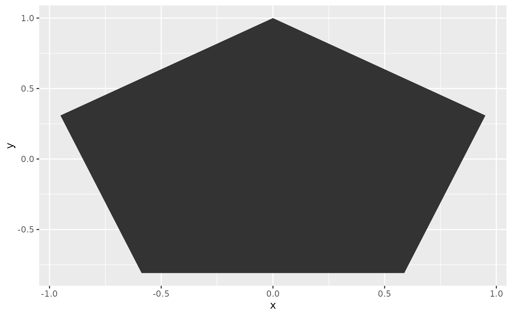

Calculate the vertices of a regular polygon given the number of sides and its radius (distance from center to vertex). Also permits transforming the resulting coordinates by moving the origin and altering the initial angle
PolyVtx(n, r = 1L, xc = 0L, yc = 0L, t1 = 0)Number of sides of the polygon
Radius of the polygon
X/Y coordinates for the center of the polygon
Angle of the first vertex in degrees
A data.frame with n rows and two columns:
xX positions of each coordinate
yY positions of each coordinate
https://stackoverflow.com/questions/3436453/calculate-coordinates-of-a-regular-polygons-vertices
coords <- PolyVtx(5, t1 = 90)
coords
#> x y
#> 1 6.123234e-17 1.000000
#> 2 -9.510565e-01 0.309017
#> 3 -5.877853e-01 -0.809017
#> 4 5.877853e-01 -0.809017
#> 5 9.510565e-01 0.309017
if (requireNamespace("ggplot2", quietly = TRUE)) {
ggplot2::ggplot(coords, ggplot2::aes(x = x, y = y)) + ggplot2::geom_polygon()
}
